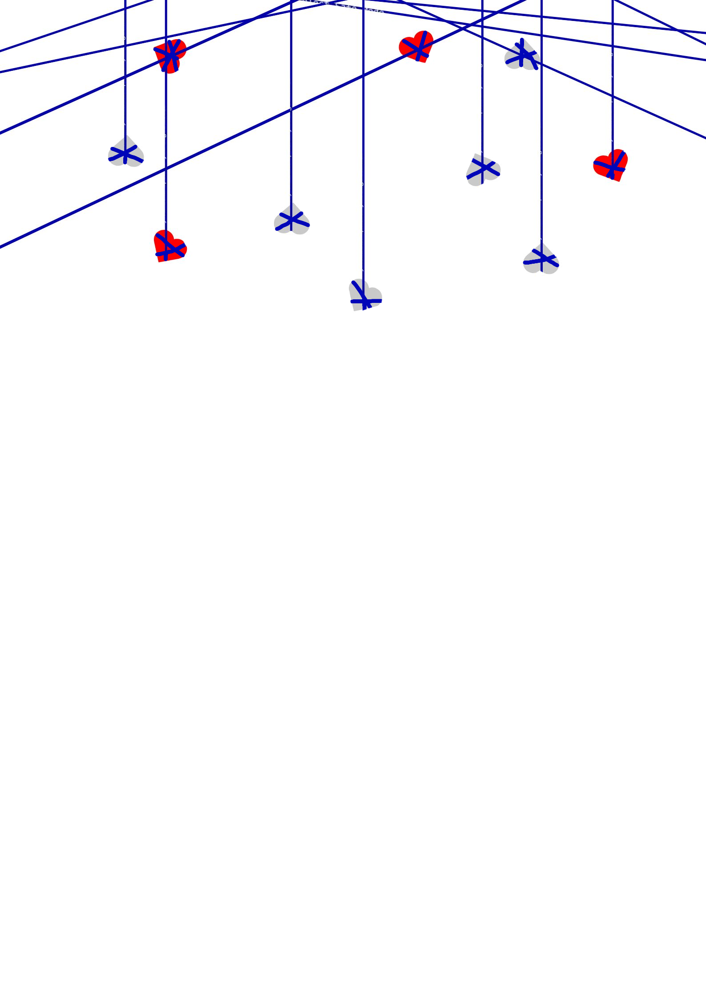

Previous Page
Undertale : Last Corridor

Error
Sa
ns
Information
* You Check,
Error
Sa
ns
ATK ??? DEF ???
* It Seems We Accidentally Stumbled Onto His World
* Focus Partner, These Strings Are Not Just Ordinary Strings
Data
An AU Destroyer as he sees everything as an anomaly
Karmic Retribution : No
Stamina : 215
Stamina Gain Rate : The Same As Normal AfterTale
Passive
Stress Bar
If
Error
Sa
ns
Is Hit, He will lose less stamina but gain 4% Stress bar, if the stress bar hits max Error Will Rage And leave. Basically the charas team win
(Hit While Moving = 5 -> 3 Stamina, Hit While standing still = 15 -> 7 Stamina)
in order to lose some stress bar you will have to Hit/damage charas with attacks
(6hp damage = lose 2% stressbar)
Aerial Variants
If You Jumped while using a move at the same time the aerial Variants will be used
Lore
Error
was erasing an au timeline but when he was about to go into the anti-void he encountred ink.
ink would proceed to tell
Error
about 3 Charas That have Been going around destroying aus, at first error did not care but when he heard some of the original undertale timelines Has been destroyed,
Error
proceed to keep the 3 anomalies in check by erasing them
Available Attacks
- Gaster Blasters
(10 stamina cost)
(CD : 12s)
- Bone Rush
(8 stamina cost)
(CD : 6s)
- Bone Combo
(18 stamina cost)
(CD : 30s)
Summon 3 Blasters to shot at your mouse Cursor and after shooting the blasters A Portal Will Open Infront Of the blasters and another will open near the 3 Chara's, The Blaster Will Charge head on to the portal and auto aimed at chara's
(The Blaster will target individual charas, so 1 chara = one charging blaster coming Up. if there is only 2 charas, then only 2 blaster Will charge ,the 1 blaster that don't have A chara to target just despawn)
(Damage : 8HP, (Charge Has No KR damage))
Summon Bones going foward but when it hits the end of The map, Portals Will Spawns on the sides of the corridor sending singular bones Randomly around
Summon Map Wide Attack Bones Of 3 Bone Sliders, 3 Bone Jump With it being a 50-50 chance of which attack Goes First
(Bone Jump Has 50-50 Chance Of spawning blue or orange bones)
- Whopie Cushion
(lands : 0 stamina Cost, Miss : 10 Stamina Cost)
(CD : 15s)
- Bone Clump
(12 stamina cost)
(CD : 24s)
- Force (0 stamina cost)(CD : 16s)
>
Sans Glows Pink And Reaches Out His Hand, Counter Charas If They Attacks Him Directly, Gives 10 Stamina back
(Charas That got countered would be slowed (-85% Speed) for 1s)
(Gives Iframe for 0.5s(for Sans To Move Away))
(Sans Still Gain From His Passive (4% bar) If Hit While Countering Or In His Iframe)
Summons A Ball Of Bones That drops from the ceiling To Where Your Mouse Cursor is, Upon being on the ground for 1s, Will Explode Shooting out Bones That Stays for 3 Seconds
Push charas to the direction The Sans is facing
- Unique Moves
(Instead Of Using Stamina, It Uses Fatal Bar)
A Helping Hand
(10% Bar Per Variant)
Calls For A Helping Hand
(Variants have a pattern (Variant 1 -> 2 -> 3 And Repeat))
Variant 1
Variant 2
Variant 3
Portals Open Up Everywhere On The Corridor And Strings Comes Up With 2 Colors, Red And Blue Strings
(Red = Damage you for 6Hp, Blue = Slows (-10% speed) You For 3s)
(The Strings will stay for 10s Before disappearing)
Portal Will Spawn Where Your Mouse Cursor is And Sends out a Red and Blue Bone Rush
(Damage : 7hp Per Bones)
Creates An Entrance Where classic is standing and opening an exit on the Cursor,The range going as far as 3/4 of the corridor
(Portal Stays Up for 5s)
(Only Sans Is able to walk Through)
* Transfer
Transfer Your Controls To Fatal
(Important : Your Stamina Will Freeze As Classic(?) Sans)
Previous Page
Next Page